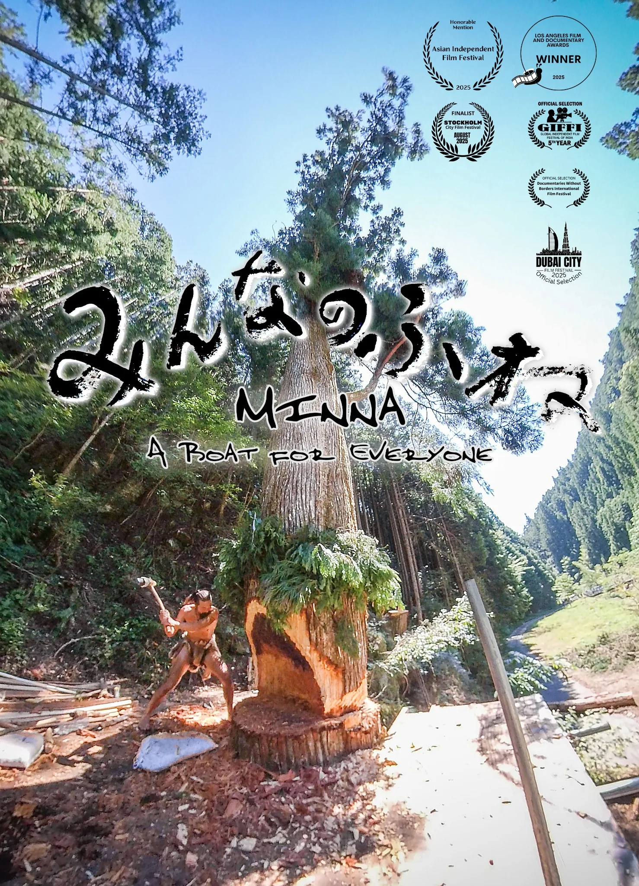
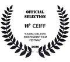

Asian Independent Film Festival Review
“この映画は瞑想のように感じられる。”
Asian Independent Film Festival Review
Official Review →
Official Review →

人・自然・地球——。
すべてのもののあり方を考える。
石おのと一本の巨木から始まった、2年以上にわたる丸木舟づくりの記録。
「みんなが笑顔で乗れる舟を作ろう」——縄文大工・雨宮国広が挑んだのは、石おのだけで樹齢250年の杉から巨大な丸木舟を生み出すこと。
現代の便利さからあえて離れ、ゆっくりと木と向き合い、人と自然、命との関係を考えていく。映画は「Jomonさんがやってきた！プロジェクト」の歩みを追いながら、私たちが見失いかけた感覚を静かに見つめます。
“この映画は瞑想のように感じられる。”
原始の道具を辿れば、現代人の失った物が見えて来るかも知れない。
人間本来の生き方はここにあると確信してしまう程。
本当に素晴らしい作品です!
内容は、、素晴らしい！ものだった。
疲弊した地球環境、行き詰まった文明の中で、確かな手応えを感じるメッセージが、我が胸を突き抜けるのを感じた。
命との向き合い方、とても考えさせられるものがありました。
木が倒れるまで、船ができるまで、そしてこれから250年の先まで。
全てにドラマがあります。
この大量生産大量消費の時代だからこそ、向き合うべき内容です。
現在、日本一周を目指して沿岸のゴミを拾いながら航海する丸木舟『ミンナ』。その舟が生まれるまでには、全国各地で多くの人が石おのを手にし、試行錯誤を重ねた時間がありました。
この映画は、航海そのものだけでなく、その原点をもう一度辿るための作品でもあります。

映画『みんなのふね』は、社会課題を扱う映画の上映サービス「cinemo」を通じて上映会を開催できます。学校・自治体・地域イベントなどでの上映に加え、監督トークや講演、オンライン登壇もご相談いただけます。
実際に制作に使った石おのや杉の実物などを用い、映画の背景をより身近に感じてもらうトークも可能です。
最新の映画祭受賞・公式選出情報に更新したドラフトです。


※ 既存Wixにある他のローレル画像は、最終移行時にローカル化して追加予定。

廃校での上映会
愛知県東栄町

大ホールでの上映会
岡山県瀬戸内市

屋外上映会
山梨県甲州市

小屋での上映会
山梨県甲州市
原始の知恵と道具を使い、全国の子どもたちと巨大な丸木舟を作り、日本を一周することを目指して2021年に始まったプロジェクト。石おのづくり、巨木との対話、丸木舟づくり、そして航海へと活動は続いています。


1969年、山梨県生まれ。ログハウスビルダー、大工、宮大工を経て、手道具による伝統的な仕事に傾倒。2009年に石おのと出会い、その可能性を追い続けています。
国立科学博物館「3万年前の航海 徹底再現プロジェクト」では、石おのによる伐採から外洋航海用丸木舟の製作に参加。現在は『ミンナ』で沿岸のゴミを拾いながら日本各地を航海しています。
映画監督・映像制作者・作編曲家。2019年の国立科学博物館「3万年前の航海 徹底再現プロジェクト」で雨宮国広と出会い、その後『みんなのふね』を初監督作として制作しました。